一套传感器驱动的 IoT 闭环方案（无屏可穿戴设备 + 移动端 App），自动感知运动状态、驱动用户建立健康的拉伸恢复习惯。
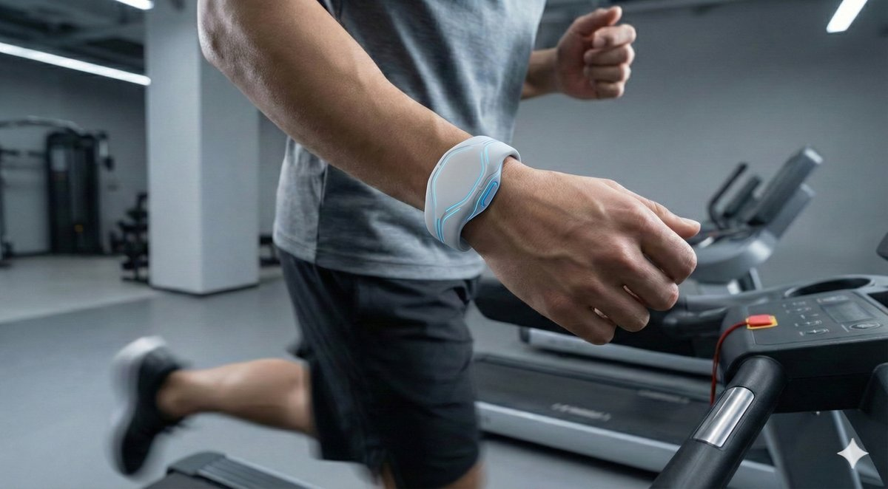
这是一次命题式设计挑战：用数字技术解决一个「不良行为」。我们团队选择的问题是——运动后放松与拉伸的习惯普遍缺失。团队成员本身都是运动爱好者，深知不拉伸带来的隐患：跑步 / HIIT 类运动长期不拉伸会增加跟腱炎与「跑步膝」风险；力量训练不拉伸容易导致肌肉失衡、圆肩、腰椎压力增加；球类运动的急停变向对软组织冲击大，长期紧绷同样会积累伤害。同时，英国近年运动人口持续上升（2022–23 年度 63.4% 的成年人达到每周 150 分钟推荐运动量），这让「运动后恢复」成为一个规模在扩大而非缩小的问题。
我们完整走完了 Double Diamond 的四个阶段：问题发现（头脑风暴 30+ 候选方向）→ 问题定义（87 份问卷 + 5 场半结构化访谈）→ 方案发散（Six Hats 六顶思考帽 + 多轮草图）→ 方案收敛（Figma 高保真原型）。为了控制问卷疲劳，我们设计了带跳转逻辑的分支问卷：一旦受访者自述「总是」拉伸，问卷立即结束，确保收集到的定性数据都来自真正存在这个问题的人群。
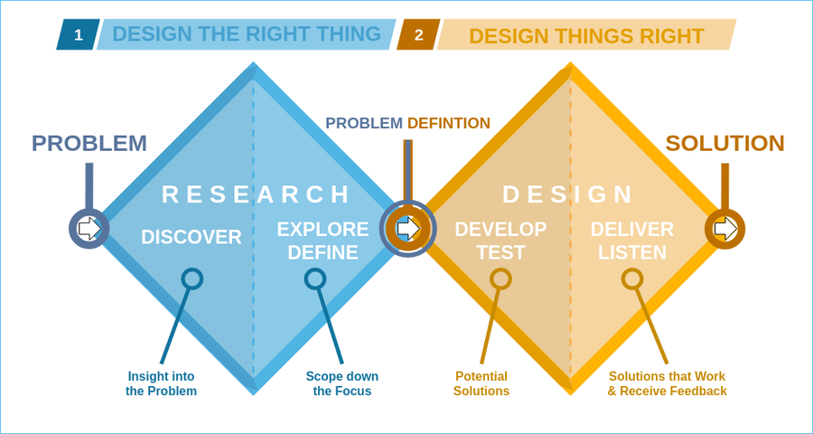
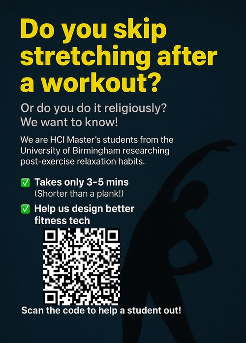
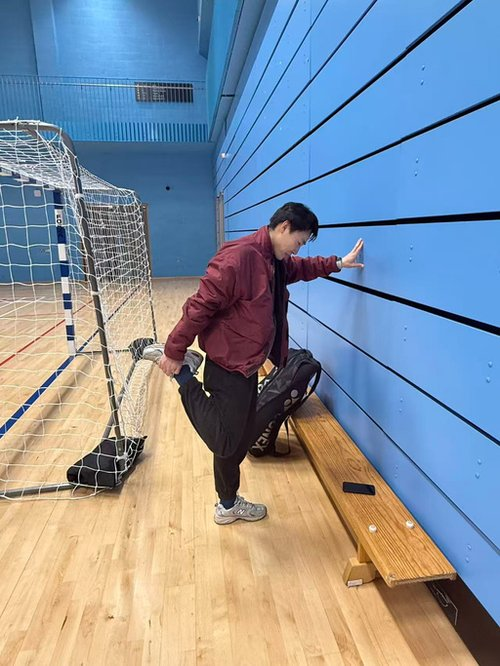
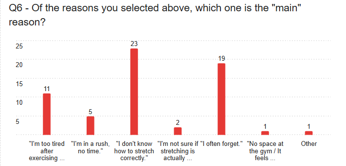
一个关键的反直觉发现：多选题里「疲劳」得票最高，但被要求「只选一个最主要的原因」时，「不知道怎么正确拉伸」反而跃居第一。这说明真正的瓶颈不是体力，而是缺乏清晰的引导——这直接决定了我们后续把「指导」而非「提醒」作为方案的核心。
我们构建了 6 个用户画像（如忙碌白领 Lucas、健身新手 Sarah 等），跨越 24–64 岁年龄段，归纳出一个共同的失效窗口：「高强度运动」与「休息」之间的 1–2 分钟。这段时间用户的意志力最低——一旦要解锁手机、搜视频、读通知，心流就会被打断，拉伸计划随之被放弃。
我们把画像归纳为三类核心痛点人群，并对应出三条设计需求：
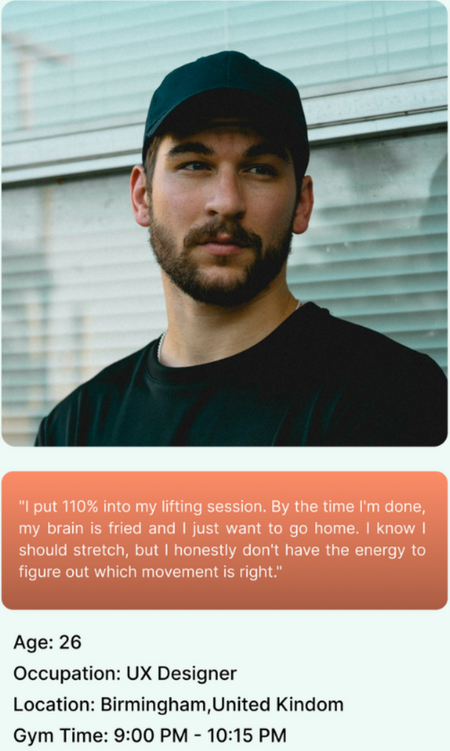
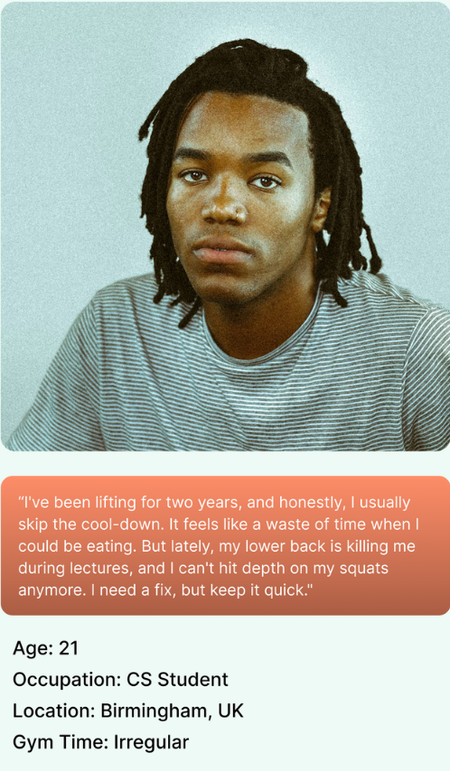
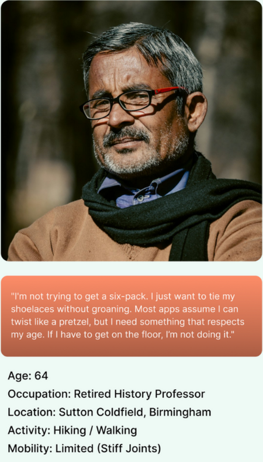
最终方案是一枚无屏手环 + 配套 App。选择无屏是刻意的取舍：持续高频采样与本地推理需要低功耗与稳定贴肤，屏幕既耗电又增加成本，也会在该放松的时刻继续制造「看屏幕」的分心。系统分三步运作：
融合心率（HR）、血氧（SpO₂）与惯性传感器（IMU）三路信号：运动结束的「指纹」是「肢体动作骤降 → 心率开始回落 → 血氧趋于稳定」同时出现。我们定义了一个简单的置信度公式：
confidence = 0.4 × 动作证据 + 0.4 × 心率证据 + 0.2 × 血氧证据
当置信度 ≥ 0.7 且在 20–60 秒的确认窗口内保持稳定，系统才判定运动真正结束，避免把短暂休息误判为收工。
手环震动 + 灯带流光提示，同步推送手机端通知；用户可以单击贪睡、双击取消、长按开关机，并且手环具备本地兜底能力——即使手机离线也能独立触发提醒，避免「重要但会被忽略」的经典可用性陷阱。
App 用一个数字孪生模型镜像用户的疲劳状态：目标肌群先以脉动的红色表示乳酸堆积与紧绷，随着拉伸推进逐渐褪成黄色、最终变绿。这借助了 Proteus 效应——当人在一个可视化的身体上看到「待修复」的状态，会自发产生「去修复它」的心理驱动力，把被动等待变成主动的「修复」行为。
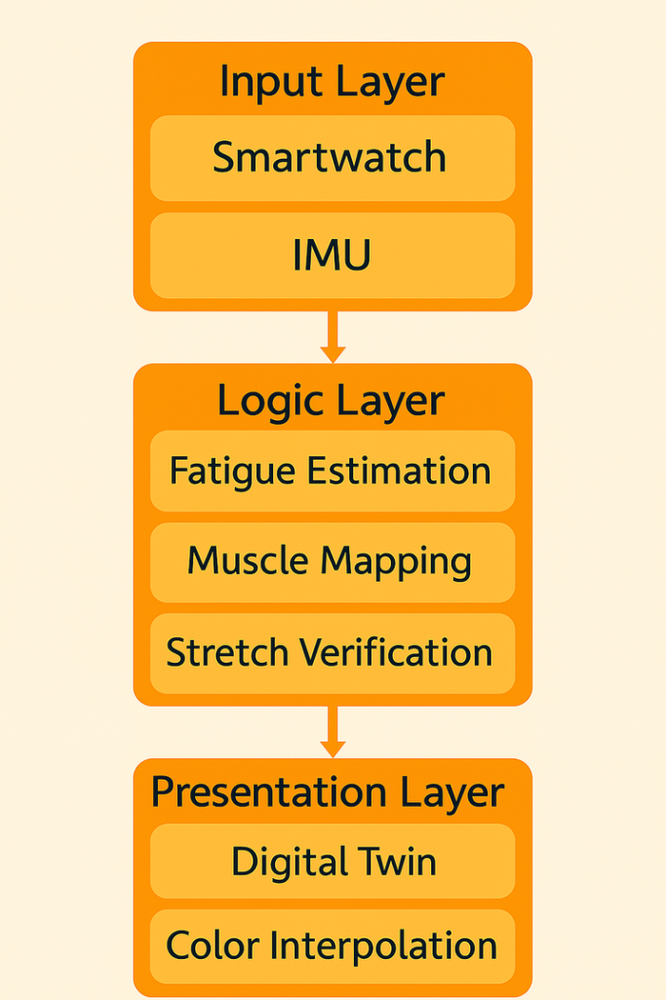
无屏手环的造型经过多轮手绘草图与工业设计细化，最终收敛为一枚左右对称、贴合手腕曲线的环形佩戴设备。
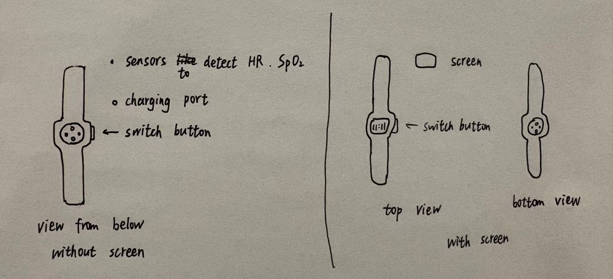
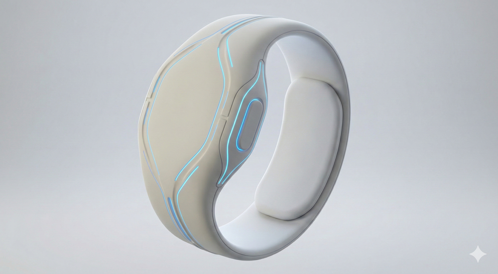
我用 Figma 独立完成了全链路高保真原型，覆盖：个性化引导的 Onboarding（身高体重与拉伸偏好）→ 运动后智能通知（自动匹配拉伸时长与目标肌群）→ 分步引导（计时器 + 部位高亮 + 语音口令）→ 完成总结与体态趋势追踪 → 勋章成就的游戏化激励。通过 5 组典型用户场景验证，覆盖了从办公室久坐后恢复到高强度运动后拉伸引导的完整路径。
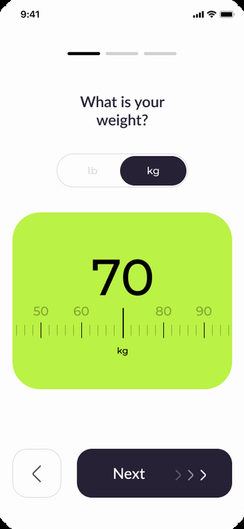
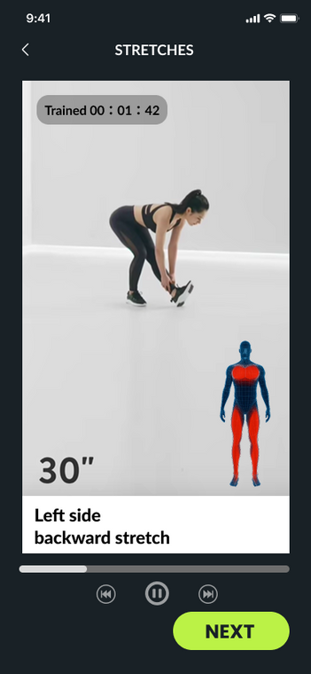